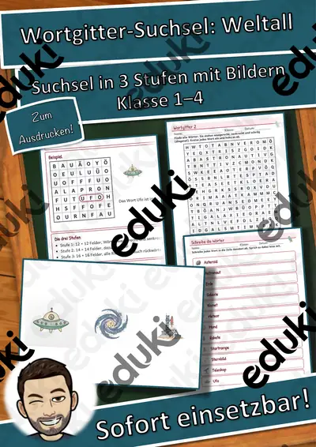
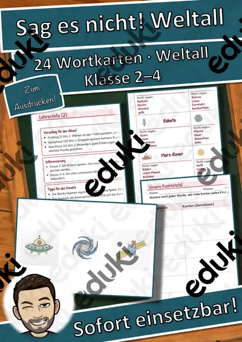
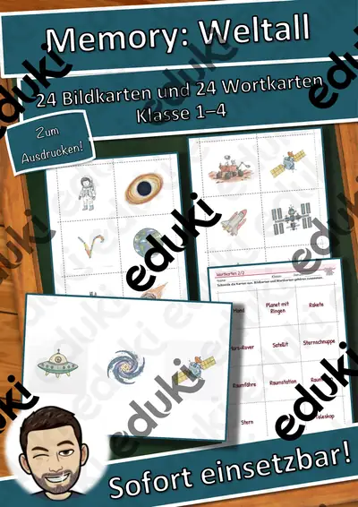
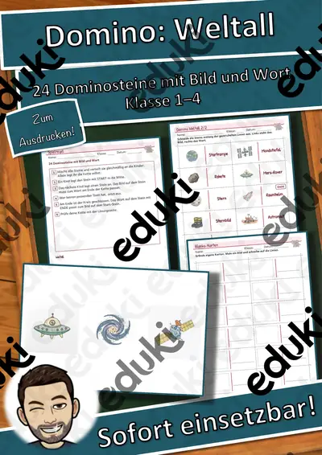
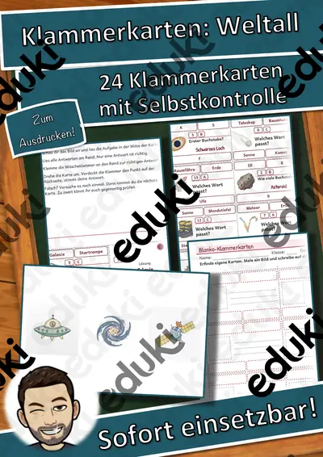
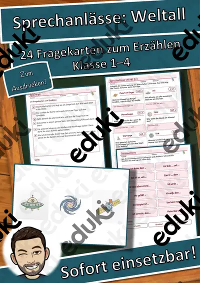
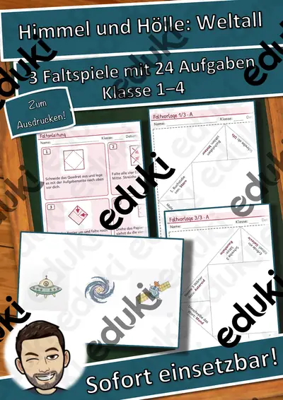

Weltall Lückentext mit Wortspeicher Hörverstehen und Suchsel
Weltall – Lückentext mit Wortspeicher & Suchsel | Sachtext | Klasse 5–7 | mit Lösungen
Mit diesem abwechslungsreichen Arbeitsblatt lernen Ihre Schülerinnen und Schüler das Thema Weltall auf motivierende Weise kennen. Der kindgerechte Sachtext vermittelt wichtige Informationen zum Thema. Anschließend sichern die Lernenden ihr Wissen durch einen Lückentext mit Wortspeicher und ein passendes Suchsel.✔ Sachtext in einfacher Sprache✔ Lückentext mit Wortspeicher✔ Suchsel zur Wiederholung wichtiger Begriffe✔ Inklusive vollständiger Lösungen✔ Sofort einsetzbar ohne Vorbereitung✔ Ideal für Vertretungsstunden, Freiarbeit, Stationenlernen und Unterrichtseinheiten
Lehrplanbezug:
Das Material fördert Lesekompetenz, sinnerfassendes Lesen, Wortschatzarbeit, Informationsentnahme aus Sachtexten sowie fachliches Grundwissen.
Es eignet sich besonders für:
- DaZ/DaF
- Lesen
- Wortschatz
- Deutsch
- Sachunterricht
- GPGEnthalten sind:
- Sachtext mit Lückentext
- Suchsel
- Musterlösung zum Lückentext
- Musterlösung zum Suchsel
- PDF-Datei zum direkten Ausdrucken
Ideal für Lehrkräfte, die schnell ein motivierendes Material zum Thema Weltall einsetzen möchten.
So setzen Sie das Material im Unterricht ein: Bewährt hat sich der Einstieg über das Hörverstehen – die Klasse scannt den QR-Code, hört den kindgerecht vertonten Sachtext zu „Weltall“ und tauscht erstes Vorwissen aus. In der Erarbeitungsphase lesen die Schülerinnen und Schüler den Sachtext in Ruhe und füllen den Lückentext aus; der Wortspeicher gibt dabei Sicherheit und entlastet das Arbeitsgedächtnis. Differenzierung leicht gemacht: Schnelle Lerner bearbeiten den Lückentext mit abgedecktem Wortspeicher, für DaZ/DaF-Lernende und den Förderunterricht dient er als gezielte Wortschatzstütze. Zur Festigung suchen die Kinder im Suchsel acht zentrale Begriffe des Themas – ideal auch als Puffer für schnelle Gruppen oder als Hausaufgabe. Die beiliegende Musterlösung ermöglicht Selbstkontrolle in der Freiarbeit, im Wochenplan und in Vertretungsstunden. Das Material ist ohne Vorbereitung einsetzbar: ausdrucken, austeilen, loslegen.
Passend zu den aktuellen Lehrplänen in Deutschland, Österreich und der Schweiz: Das Arbeitsblatt trainiert genau das, was die Bildungsstandards der Kultusministerkonferenz im Kompetenzbereich „Lesen – mit Texten und Medien umgehen“ fordern – sinnerfassendes Lesen, gezielte Informationsentnahme aus Sachtexten und die Sicherung des Fachwortschatzes. Damit lässt es sich in allen 16 Bundesländern und Schularten direkt einsetzen, etwa im Lernbereich „Lesen – mit Texten und weiteren Medien umgehen“ des bayerischen LehrplanPLUS, im Bereich „Texte und andere Medien“ des Bildungsplans Baden-Württemberg oder im Basiscurriculum Sprachbildung des Rahmenlehrplans Berlin-Brandenburg. Im österreichischen Lehrplan entspricht das dem Kompetenzbereich „Lesen – Umgang mit Texten und Medien“ in Volksschule, Mittelschule und AHS-Unterstufe, im Schweizer Lehrplan 21 dem Fachbereich Deutsch D.2 „Lesen“ mit dem Schwerpunkt „Verstehen von Sachtexten“ (Zyklus 2 und 3). Wortspeicher und Lückentext stützen zudem den systematischen Wortschatzaufbau in Deutsch als Zweitsprache (DaZ/DaF).Mit seinem Thema „Weltall“ gehört das Blatt zudem in den Sachunterricht-Unterricht: Hier greifen der Heimat- und Sachunterricht, im Lehrplan 21 der Fachbereich „Natur, Mensch, Gesellschaft“ (NMG).Abgedeckte Kompetenzbereiche je Fach (Überbegriffe der Bildungsstandards/Lehrpläne): Deutsch/Lesen (Sprechen und Zuhören, Schreiben, Lesen – mit Texten und Medien umgehen, Sprache und Sprachgebrauch untersuchen); Sachunterricht (Erkenntnisgewinnung, Kommunikation, Bewertung, Handlung (perspektivenbezogen)). Konkret üben die Lernenden hier das sinnentnehmende Lesen eines Sachtextes, die gezielte Informationsentnahme, den Aufbau des themenbezogenen Fachwortschatzes sowie die selbstständige Ergebniskontrolle – Lernziele, die in den genannten Kompetenzbereichen aller Jahrgangsstufen der jeweiligen Schulart verankert sind.
Ähnliche Materialien
Wort-Bild-Karten: Weltall – Wort-Bild-Karten – Klasse 1–4

Wortgitter-Suchsel: Weltall – Wortgitter – Klasse 1–4

Wortspiele: Sag es nicht! Weltall – Klasse 2–4

Memory: Weltall – Bild-Wort-Spiele – Klasse 1–4

Domino: Weltall – Bild-Wort-Spiele – Klasse 1–4

Klammerkarten: Weltall – Klammerkarten – Klasse 1–4

Sprechanlässe: Weltall – Sprechanlässe – Klasse 1–4
